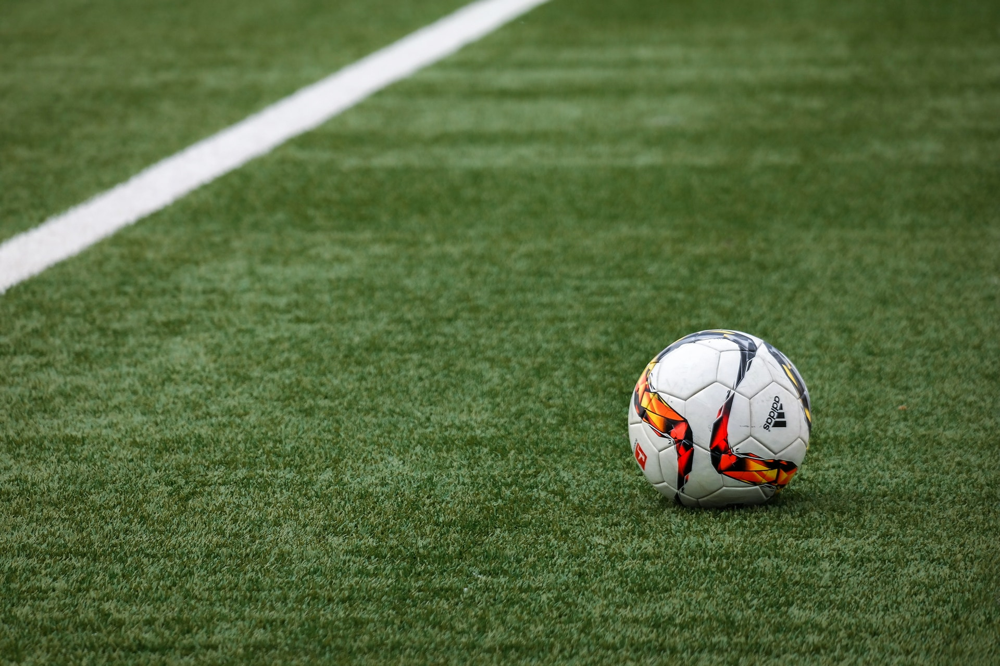
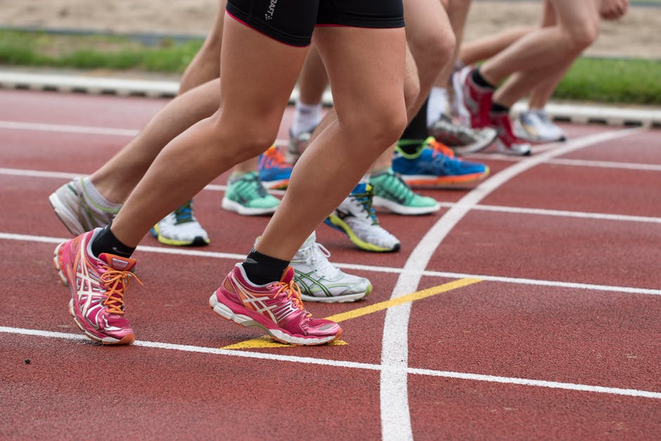
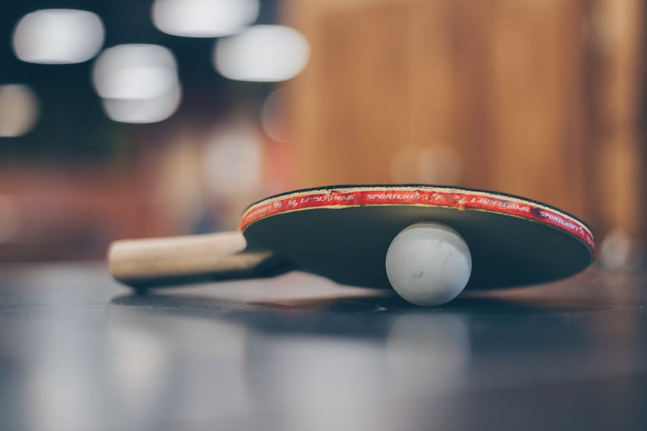
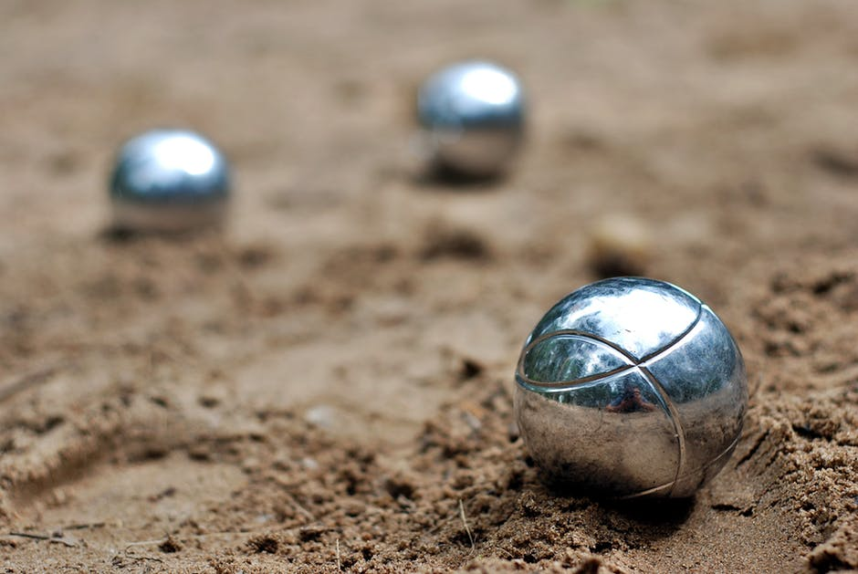
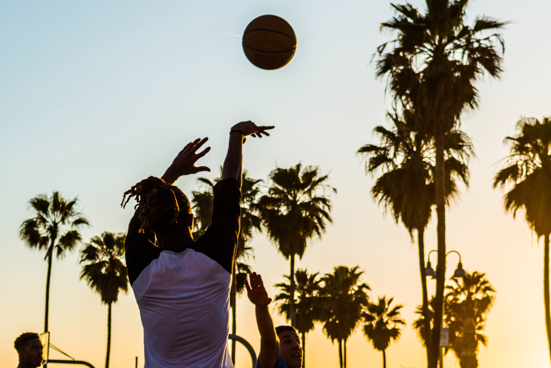
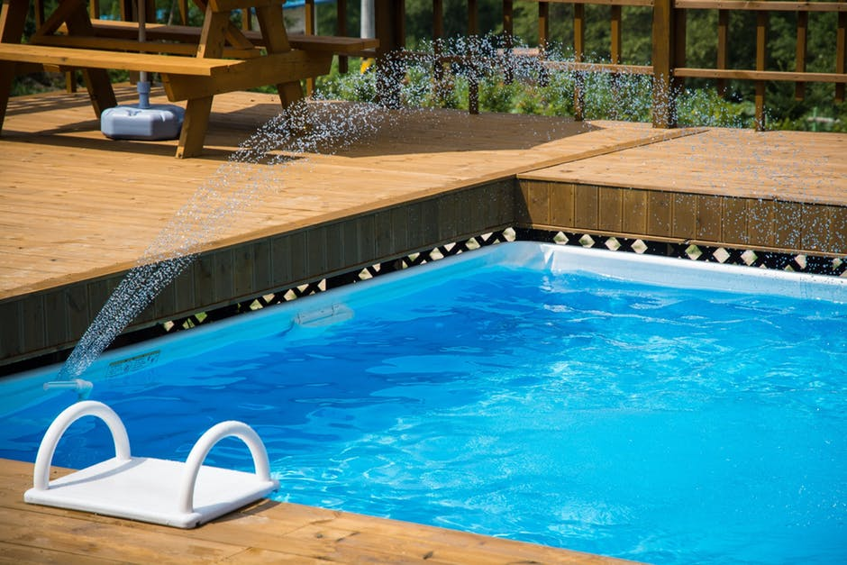
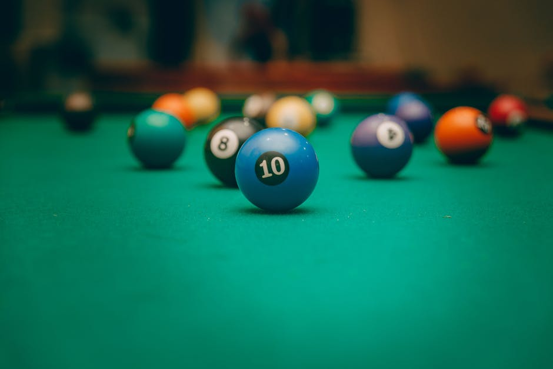
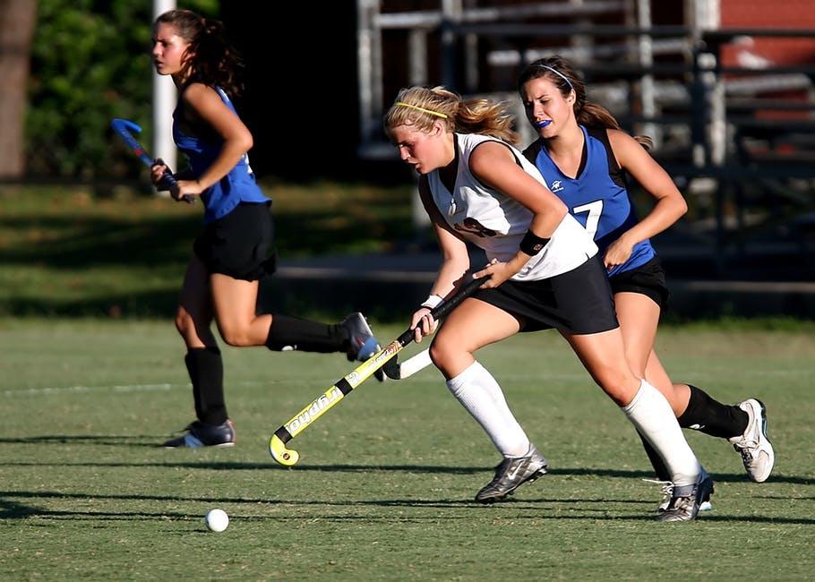
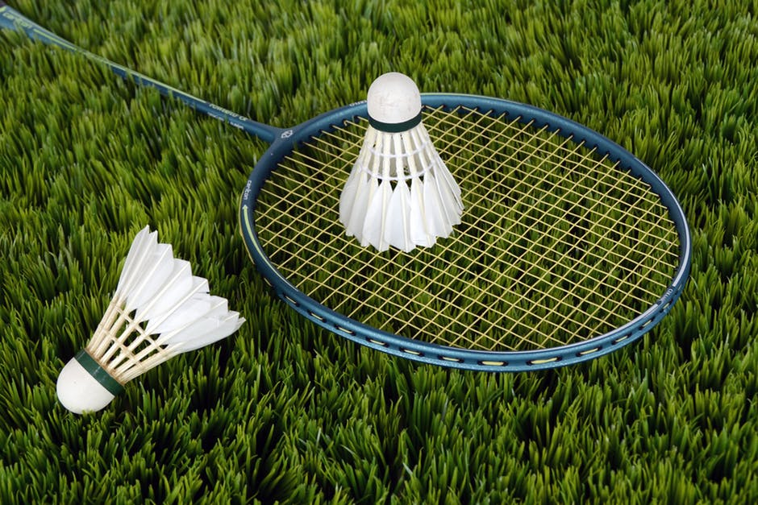

Hier komen like 10 regels van spul lekker he dat ik dit moet invullen...
Main Content Hier TODO

Hier komen like 10 regels van spul lekker he dat ik dit moet invullen...
Hier komen like 30 regels van spul lekker he dat ik dit moet invullen...
De voetbalvereniging De Kennemers werd opgericht op 28 december 1918 en is daarmee de oudste voetbalvereniging uit de regio. De vereniging heeft een zaterdag- en zondagafdeling, op zaterdag spelen de jeugd, een senioren team en is er ook een potje "vriendenvoetbal" voor senioren. Op zondag spelen de senioren, zowel mannen als vrouwen.
D.E.M. staat voor 'Door Eendracht Macht'. De vereniging vindt de onderlinge verhoudingen zeer belangrijk en besteedt hieraan veel aandacht. Op het sportieve vlak biedt de vereniging vele activiteiten waaraan alle leden, jong en oud, kunnen deelnemen.
Rapidity is de tafeltennisvereniging voor omgeving Beverwijk. Op donderdagavonden is het mogelijk om kennis te maken met deze sport. Jongeren tot 18 jaar zijn welkom van 19 uur tot 20 uur welkom. Daarna kunnen senioren spelen.
De Petanque (Ook wel jeu de boules genoemd) club Elza Boules is opgericht op 1 januari 1987. Zij zijn gevestigd op de Laan van Meerestein 1 in Beverwijk, achter de vlindertuin in het park Overbos.
Tennisclub BLTC Westerhout is opgericht in 1928. Er kan getennist worden op het tennispark Duinwijk. De vereniging biedt meerdere pakketten aan voor jong en oud, ingaand vanaf het begin van het sportseizoen.

Korfbalvereniging Heemskerk Beverwijk Combinatie (KVHBC) is de korfbalvereniging in de regio Kennemerland. Als focuspunt staan het plezier hebben, de persoonlijke ontwikkeling en het groeien in een teamsport centraal. Verwacht wordt dat een lid minimaal 1 keer in de week komt trainen, maar 2 keer per week wordt als standaard beschouwd.
Zwemschool Waterval is al jarenlang de bekendste zwemschool in de omgeving. Kinderen vanaf 4 jaar oud kunnen een cursus volgen om in 3 maanden te leren zwemmen. De zwemlessen zijn alleen mogelijk tijdens de weekenden.
De biljartclub OBIS(Ook Biljarten Is Sport) biedt dagelijks diverse klassen en speelsoorten voor het biljarten aan. Vaste speelavonden zijn dinsdag-, donderdag- en vrijdagavond. Jong en oud zijn welkom.
Bij de Beverwijkse hockeyclub Overbos (BHC Overbos) kan er vanaf 5 jaar worden meegespeeld. Er zijn competitieve en recreatieve hockey teams mogelijk. Er zijn ook mogelijkheden met beperkingen van 8-18 jaar met name G-Hockey.
De senioren bij de Heemskerkse badmintonclub spelen op maandag- en woensdagavond in sporthal de Waterakkers aan de Kerkweg van 20 tot 22 uur. De jeugd daarentegen speelt op zaterdagochtend van 9 tot 12. Bij intresse is het mogelijk om gelijk mee te spelen. Ook is het mogelijk als voor 1 oktober lidmaatschap aangegaan word een gratis racket te ontvangen.
Wat moet ik hier doooooooooooooooooooooeeeeeeeeeeeeeeeeeeeeeeen waarom is het zo onduiiidelijkkkkk :(
Hier is de site van TODO club, met veel info over taekwando en de andere sporten die zij aanbieden.